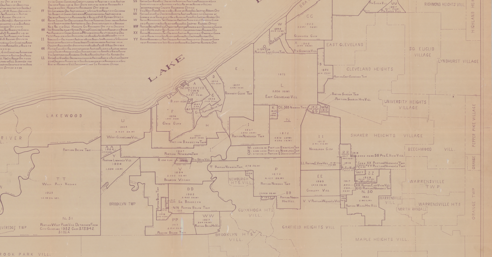

Creating (and caring for) Open data from the past; Will Skora
I could do this!
why
civic data [and why]
building upon other open work
Research, knowledge about Cleveland & history
how ?
Where to look?
your local library

first stop: georectification
control points
but I can't! difficulties
Manual Drawing; reviewing over both maps
interpretation
woof, we certainly can't trace that at all.
hopkins and Sanborns, oh my ^_^
progress, not perfection
How do we store this data in the future?
What CPL offers: flatbed scanning, institutional repository
more hopkins, sanborns (https://cpl.org/maps)
maybe historic aerial imagery?
Historic street view
https://github.com/